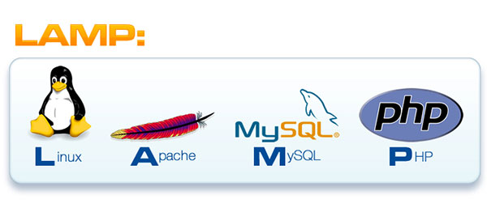

آموزش کامل PHP و LAMP مقدماتی (رایگان)
مقدمه: معرفی زبان برنامه نویسی PHP
امروزه PHP یکی از مهم ترین تکنولوژی های توسعه ی وب می باشد. و سهم عمده ای در بازار را به خود اختصاص داده است.
زبان PHP به عنوان زبان اصلی طراحی وب، همیشه در حال رشد و پیشرفت سریع می باشد و اخیرا با انتشار PHP 7 گام بزرگی در پیشرفت این زبان برداشته شد و بسیاری از نیازمندی های روز برنامه نویسان به PHP اضافه شد و این پویایی و رشد، محبوبیت روز افزون این زبان برنامه نویسی قدرتمند را تضمین مینماید.

در حال حاضر فریمورک های بسیار قدرتمندی برای برنامه نویسان PHP وجود دارد که جزو برترین فریمورک ها (حتی با وجود زبان های برنامه نویسی دیگر) می باشند. به عنوان مثال می توان فریمورک های Symfony، Laravel، Zend و… را نام برد. از این میان، فریمورک تقریبا جدید Laravel در حال حاضر، سهم بزرگی از بازار را به خود اختصاص داده و توجه بسیاری را به خود جلب کرده است.
همچنین قدرتمند ترین و فعال ترین سیستم های مدیریت محتوای دنیا، به زبان PHP نوشته شده اند. که به طور ویژه، Drupal را نام می برم که فراتر از یک سیستم مدیریت محتوا بوده و به عنوان یک فریمورک یا چارچوب بسیار پیشرفته و قدرتمند برای توسعه ی اپلیکیشن های تحت وب و وب سایت های متوسط و بزرگ می باشد و دارای جامعه ی فعال بسیار بزرگ در سراسر دنیا می باشد. همچنین سیستم های مدیریت محتوای وردپرس و جوملا نیز سهم بزرگی در وب سایت ها دارند.
درباره این دوره ی آموزشی
با توجه به مقدمه ی فوق، به اهمیت زیاد زبان برنامه نویسی PHP پی می بریم. و من، احمد حجازی، تصمیم دارم در این دوره ی آموزشی، شما را با زبان ساده و دقیق، با توسعه ی PHP آشنا کنم.
ویژگی بارز دوره های آموزشی اینجانب (احمد حجازی)، دقت به جزییات، بررسی دقیق نکات، و تسلط به مباحث مطرح شده و پرهیز از اشتباه (تا جای ممکن) می باشد. همچنین در هر سطحی از دوره حتی در سطح مفدماتی، نکات با دقت خاصی بررسی میشود که حتی ممکن است یک فرد حرفه ای نکات جدیدی را فرا بگیرد که قبلا توجه نکرده بود.
دوره ی آموزشی PHP و LAMP یک دوره ی کامل برنامه نویسی وب با PHP است که در سه فصل سطح، متوسط و پیشرفته تهیه شده است.
در حال حاضر، فصل های ابتدایی این دوره تهیه شده و به رایگان در این صفحه قرار گرفته است.
لطفا ویدئو معرفی دوره را در پایین مطلب تماشا کنید.
با مشاهده ی این دوره چه مهارت هایی به دست می آورید؟
- آشنایی با روش های نصب PHP و آماده سازی محیط توسعه بر روی کامپیوتر خودتان
- آشنایی با نرم افزار XAMPP و بررسی دقیق آن و بررسی جزییات و ویژگی های آن
- موضوعات دیگر اضافه می شود….
سرفصل های موجود (در حال به روز رسانی)
توجه: سرفصل های زیر در حال به روز رسانی است و در آینده به زودی قسمت های جدید اضافه می گردد.
توجه: آموزش های زیر، برای کلیه ی اعضای سایت طلوع رایگان می باشد.
- بخش اول: معرفی دوره (یک قسمت)
- بخش دوم: راه اندازی محیط توسعه (ویندوز) - و بررسی نرم افزار XAMPP و اجزاء آن (دو قسمت)
نظرات شما
قسمت نظرات با استفاده از سرویس دیسکاس پیاده سازی شده است. متأسفانه این سرویس از داخل ایران قابل دسترس نیست. لطفا از آی پی خارجی استفاده کنید.